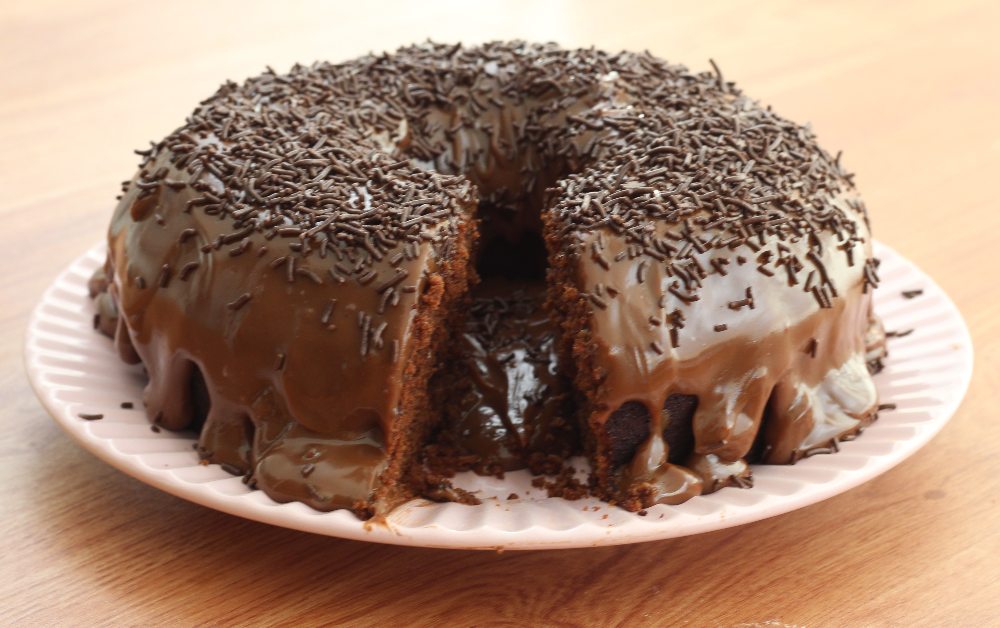

Bolo de chocolate
Ingredientes
Massa
- 2 xícaras de farinha de trigo Dona Benta
- 4 ovos
- 1 xícara de óleo
- 1 xícara de leite
- ¹/² xícara de cacau em pó 70% (do padre)
- 1 xícara de açúcar refinado
- 1 tampa de fermento
- 1 colher das de café de essência de baunilha
- 1 xícara de gotas de chocolate
Cobertura
- 1 caixinha de leite condensado Italac
- 2 colheres das de sopa (cheias) de cacau em pó 70%
- 1 colher das de sopa de manteiga
- 1 caixinha de creme de leite
- 1 pacote de chocolate granulado
Modo de preparo
Massa
- Pré-aqueça o forno a 180°
- Unte uma forma redonda
- Misture todos os ingredientes úmidos e depois todos os secos até obter uma massa homogênea
- Despeje a massa na forma untada
- Leve ao forno já pré-aquecido a 180° por 35-40 minutos
Cobertura
- Misture todos os ingredientes em uma panela
- Leve ao fogo baixo, mexendo bem até desgrudar do fundo da panela
- Quando o bolo estiver assado, despeje a cobertura até cobrir todo o bolo
- Espere esfriar e polvilhe com o granulado